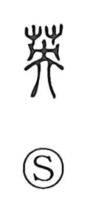

英

Uncategorized
Kun: hanabusa | On: ei
britain ・ england ・ excellent ・ distinguished
Explanation
英 is a phono-semantic character built on 央 as its phonetic, which marks the On reading ei and also carries connotations of beauty and flourishing. In this graph it evokes the image of a fine blossom—the beauty of flowers—and from that image the meaning extends to people, describing one of remarkable talent and distinction. The same phonetic 央 appears in 映 (ei, “to reflect”), reinforcing the sound value that underpins 英’s sense of excellence.